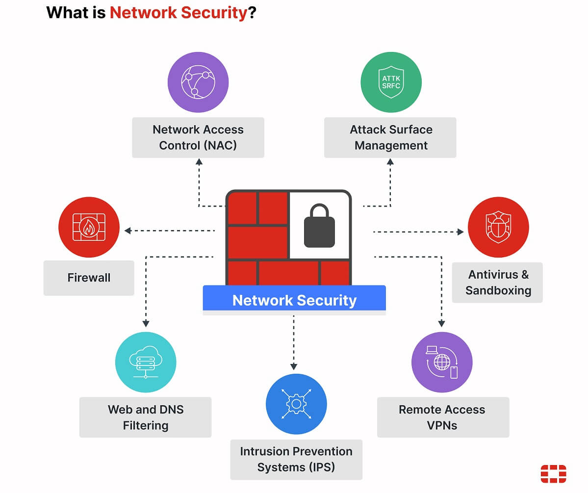
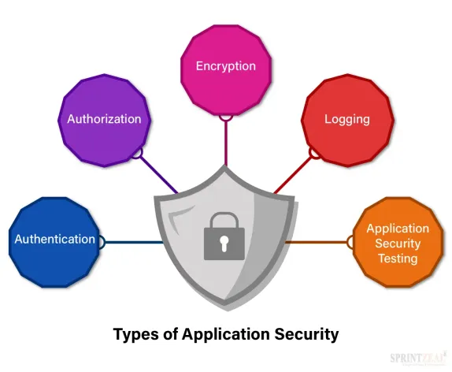
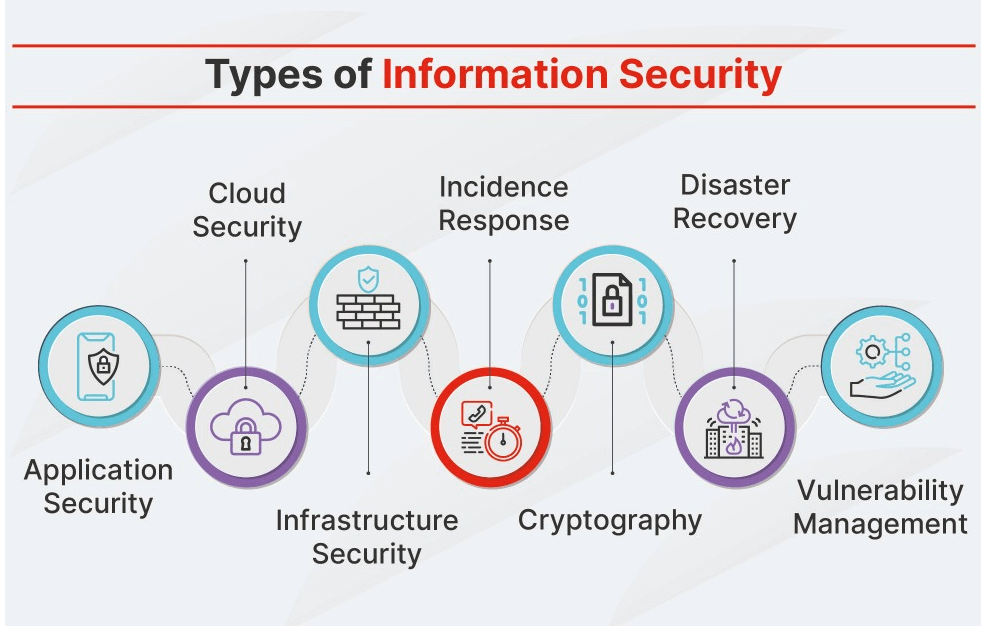
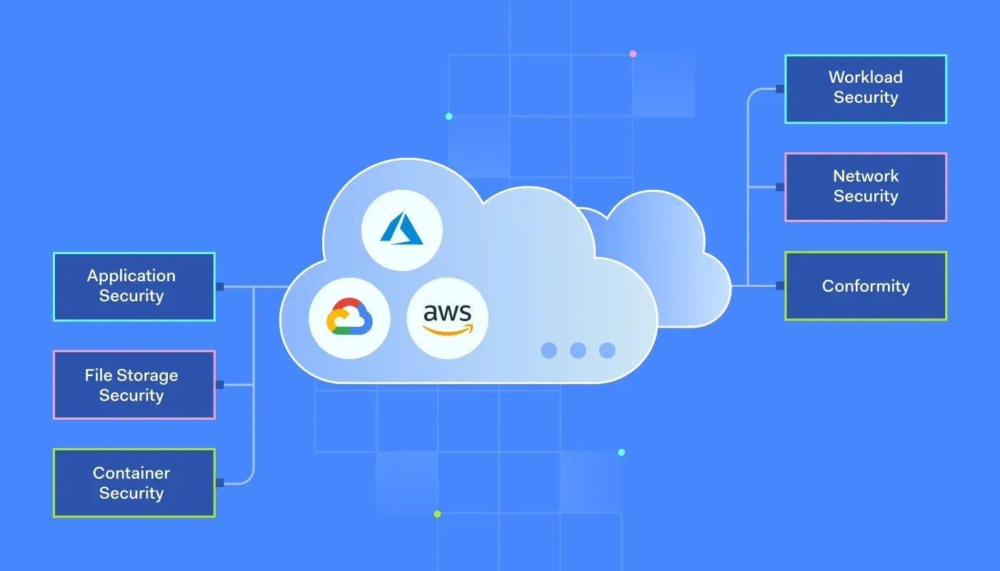
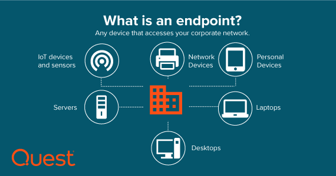
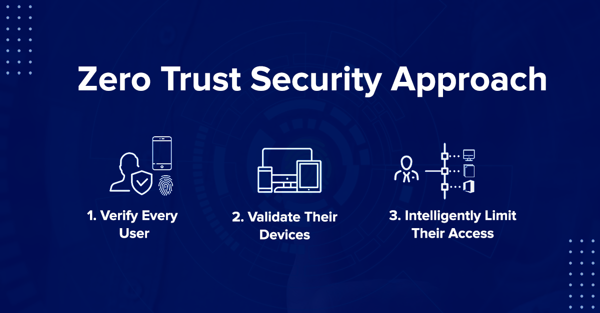
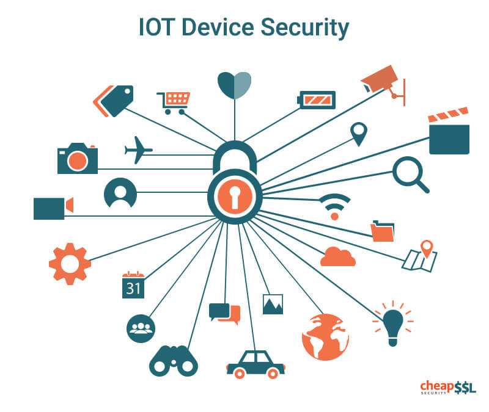
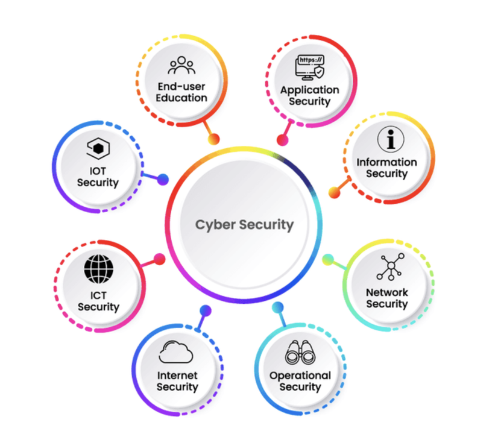

This section of the website is dedicated to helping people understand the different types of cyber securty. There are many different types of cybersecurity, ranging from passwords and account security to the servers of the websites you connect to daily. This section of the site will go into detail about 9 different types of Cyber Security, which will be Network Security, Application Security, Information Security, Cloud Security, Endpoint Security, Zero Trust, IOT Security, Operational Security, and Mobile Security.
Most of the time, a Cyber attack comes over the network, meaning that Network Security should be able to detect, monitor, and block attacks that aim to gain unauthorized access to the network. This is done using VPN's, Intrusion detection and prevention systems, firewalls (which is in switches, bridges, servers, and routers). Solutions to network security include data and access controls as well.
Application Security in terms of protection against Cyber Attacks is a concept involving identifying vunerabilities from the application development and publication stages. Application Security primarily involves checking code, testing and reviewing results, point security testing, and ensuring no applications have security flaws or vunerabilities that may be exploited by attackers, ie broken authentication and cross-site scripting.
Information Security is any measure that has been undertaken in order to secure sensitive data, including but not limited to Personally Identifiable Information and data stored in data bases, such as payment information. It covers reguklar backups to keep information safe, encryption of the data, both in transit and resting, and access control including Multifactor Authentication. This ensures avalability, integrity, and confidentiality of data and preventing any and all unauthorized access.
With cloud computing growing the way it is, securing data in places like Google Cloud, Amazon Web Services, and Apple iCloud has become indispensable. Cloud Security refers to policies, services, administrative and technical controls that protect cloud deployment and its components. As businesses continue migrating to the cloud, ensuring that the cloud is secure is getting more important every day.
Endpoint security refers to the securing of where the data will end up, including servers, mobile devices, laptops, and desktops. Securing these devices and the data they carry is what endpoint security is. Advanced threat prevention software, including anti-phishing protocols, anti-ransomeware software, as well as endpoint detection and response solutions ensure that end-user devices stay secure.
This is a more physical level of control compared to the others listed. This approach offers and protects individual recoureses using role-based access control, least privilege access, micro-segmenting networks, and not trusting any internal or external user.
IoT, or Internet of Things, security involes securing wearable devices(Apple and Android watches, earbuds, etc.), Smartphones, and all connected devices found in a smart home. It not only secures the device in question, but also the network and all connected devices that are on the network. Most networks automatically isolate these devcices, but sometimes you have to do it manually. Thankfully these devices use a secure communication protocol as well as access control mechanisms to keep the devices up to date.
Operational Security refers to choices, technology, and activities in which information accests and other sensitive information is protected and handled. It maintains confidentality of the information only to authorized users and detects any unusual behavior that could be related to malicious activites.
Mobile devices primarily contain access to corporate data, so buisnesses are more prone to instant messaging attacks, phishing, and malicious apps. this is where mobile security is important, it protects these devices from those attacks and preventing unauthorized access from jailbreaking and rooting the devices.
In conclusion, cybersecurity is a very broad term, and there are many ways to stay safe. You can do your best to keep your data safe by not downloading suspisious files or clicking on suspisious links. We go into more detail on protecting yourself online here